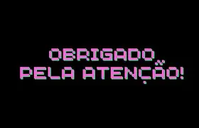

Telefone: (11) 914828354 | E-mail: ggiulia757@gmail.com
Meu objetivo é me tornar uma engenheira de software bem sucedida.
2020 - 2025 | ADMINISTRAÇÃO, FINANÇAS E MARKETING
Instituto Técnico, Caio Plinio Secondo (Como, Itália)
2026 - 2030 | ENGENHARIA DE SOFTWARE
FIAP (São Paulo, Brasil)
2026 | Formação Social e Sustentabilidade
2026 | Design Thinking Process
2024 - 2025 | Lojista
2023 - 2024 | Barista
